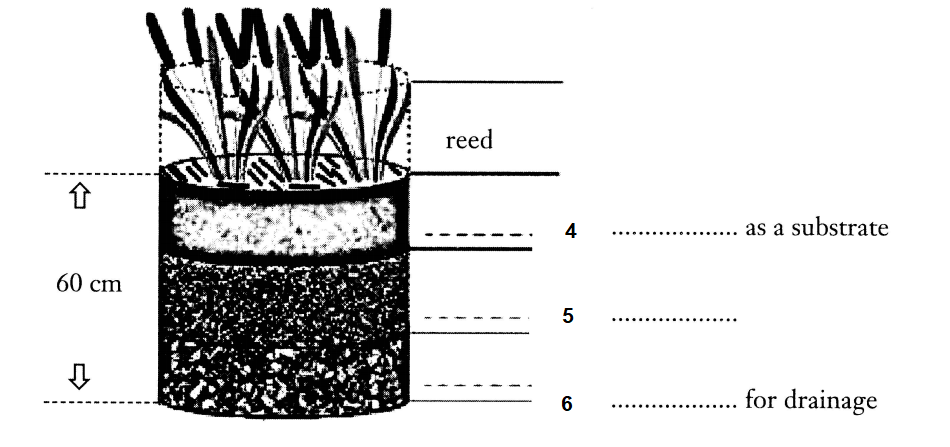

Water Treatment 2: Reed Bed
In recent years, it has been shown that plants, more accurately roots, play a crucial part in purifying dirty water before it enters seas and rivers. In 15th-century Britain, dirty water was purified by passing through the wetlands. People began to realize that the “natural” way of water purification was effective. Nowadays subsurface flow wetlands (SSFW) are a common alternative in Europe for the treatment of wastewater in rural areas, Mainly in the last 10 to 12 years there has been a significant growth in the number and size of the systems in use. The conventional mechanism of water
purification used in big cities where there are large volumes of water to be purified is inappropriate in rural areas.
The common reed has the ability to transfer oxygen from its leaves, down through its stem and rhizomes, and out via its root system. As a result of this action, a very high population of microorganisms occurs in the root system, in zones of aerobic, anoxic, and anaerobic conditions. As the waste water moves very slowly through the mass of reed roots, this liquid can be successfully treated. The reason why they are so effective is often because within the bed’s root sector, natural biological, physical and chemical processes interact with one another to degrade or remove a good range of pollutants.
Dirty water from households, farms and factories consume a lot of oxygen in the water, which will lead to the death of aquatic creatures. Several aquatic plants are important in purifying water. They not only absorb carbon dioxide and release oxygen into the water, improving the environment for fish, but absorb nutrients from the welter as well. Britain and the G.S. differ in their preference of plants to purify water. Bulrushes (Scirpus spp.) and rushes (Juncus spp.) are excellent water purifiers. They remove excess nutrients from the water as well as oil and bacteria such as Escherichia coli and Salmonella. However, algae grow freely in summer and die off in winter. Their remains foul the bottom of the pool.
Artificial reed beds purify water in both horizontal and downflow ways. The reeds succeed best when a dense layer of root hairs has formed. It takes three years for the roots to fully develop. Which type of wetland a certain country applies varies widely depending on the country in Europe and its main lines of development. Besides the development of horizontal or vertical flow wetlands for wastewater treatment, the use of wetlands for sludge treatment has been very successful in Europe. Some special design lines offer the retention of microbiological organisms in constructed wetlands, the treatment of agricultural wastewater, treatment of some kinds of industrial wastewater, and the control of diffuse pollution.
If the water is slightly polluted, a horizontal system is used. Horizontal-flow wetlands may be of two types: free-water surface-flow (FWF) or sub-surface water-flow (SSF). In the former the effluent flows freely above the sand/gravel bed in which the reeds etc. are planted; in the latter effluent passes through the sand/gravel bed. In FWF-type wetlands, effluent is treated by plant stems, leaves and rhizomes. Such FWF wetlands are densely planted and typically have water-depths of less than 0.4m. However, dense planting can limit the diffusion of oxygen into the water.
These systems work particularly well for low strength effluents or effluents that have undergone some forms of pretreatment and play an invaluable role in tertiary treatment and the polishing of effluents. The horizontal reed flow system uses a long reed bed, where the liquid slowly flows horizontally through. The length of the reed bed is about 100 meters. The downside of horizontal reed beds is that they use up lots of land space and they do take quite a long time to produce clean water.
A vertical flow (downflow) reed bed is a sealed, gravel filled trench with reeds growing in it. The reeds in a downflow system are planted in a bed 60cm deep. In vertical flow reed beds, the wastewater is applied to the top of the reed bed, flows down through a rhizome zone with sludge as a substrate, then through a root zone with sand as a substrate, followed by a layer of gravel for drainage, and is collected in an under drainage system of large stones.
The effluent flows onto the surface of the bed and percolates slowly through the different layers into an outlet pipe, which leads to a horizontal flow bed where it is cleaned by millions of bacteria, algae, fungi, and microorganisms that digest the waste, including sewage. There is no standing water so there should be no unpleasant smells.
Vertical flow reed bed systems are much more effective than horizontal flow reedbeds not only in reducing biochemical oxygen demanded (BOD) and suspended solids (SS) levels but also in reducing ammonia levels and eliminating smells. Usually considerably smaller than horizontal flow beds, they are capable of handling muc stronger effluents which contain heavily polluted matters and have a longer lifetime value. A vertical reed bed system works more efficiently than a horizontal reed bed system, but it requires more management, and its reed beds are often operated for a few days then rested, so several beds and a distribution system are needed.
The natural way of water purification has many advantages over the conventional mechanism. The natural way requires less expenditure for installation, operation and maintenance. Besides, it looks attractive and can improve the surrounding landscape. Reed beds are natural habitats found in floodplains, waterlogged depressions and estuaries. The natural bed systems are a biologically proved, an environmentally friendly and visually unobtrusive way of treating wastewater, and have the extra virtue of frequently being better than mechanical wastewater treatment systems.
Over the medium to long term reed bed systems are, in most cases, more cost effective to install than any other wastewater treatment. They are naturally environmentally sound protecting groundwater, dams, creeks, rivers and estuaries.
Questions 1-3
Do the following statements agree with the information given in Reading Passage?
In boxes 14-16 on your answer sheet, write
| TRUE FALSE NOT GIVEN |
if the statement agrees with the information if the statement contradicts the information if there is no information on this |
1 The reed bed system is a conventional method for water treatment in urban areas.
2 In the reed roots, there is a series of processes that help break down the pollutants.
3 Escherichia coli is the most difficult bacteria to eliminate.
Questions 4-6
Complete the diagram below.
Choose NO MORE THAN THREE WORDS from the passage for each answer.
4
5
6

Question 7-11
Use the information in the passage to match the advantages and disadvantages of the two systems: horizontal flow system and down-flow system (listed A—H) below.
Write the appropriate letters A-H in boxes 7-11 on your answer sheet.
The advantage of the downflow system is 7 ; however, 8 and 9 . The two advantages of the horizontal system are 10 and 11 . In comparison with the downflow system, the horizontal system is less effective.
A. it requires several beds
B. it is easier to construct
C. it builds on a gradient
D. it doesn’t need much attention
E. it produces less sludges
F. it isn’t always working
G. it needs deeper bed
H. it can deal with more heavily polluted water
Questions 12-13
Choose two correct letters, from the following A, B, C, D or E
Write your answers in boxes 12-13 on your answer sheet
What are the TWO advantages of the natural water purification system mentioned in the passage:
A It uses micro-organisms
B It involves a low operating cost
C It prevents flooding1
D1 It is visually good-looking
E1 It can function in all climates
---End of the Test---
Please Submit to view your score, solution and explanations.